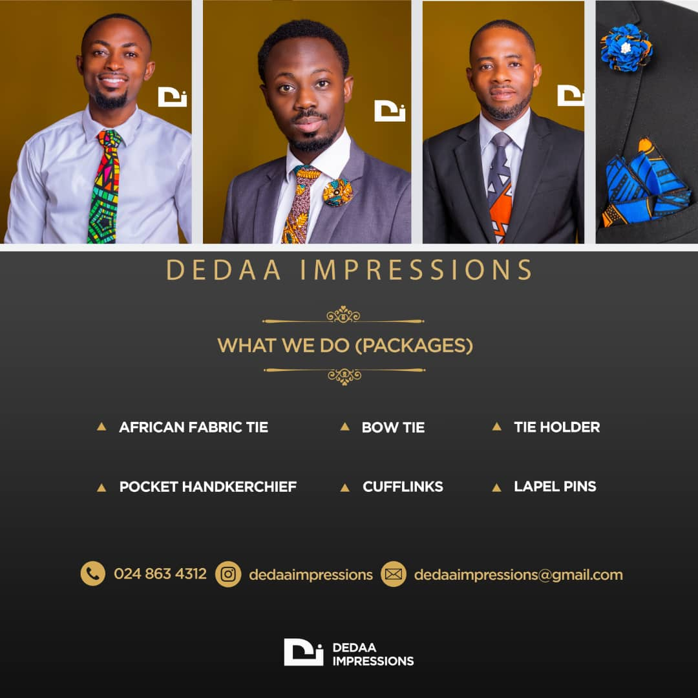
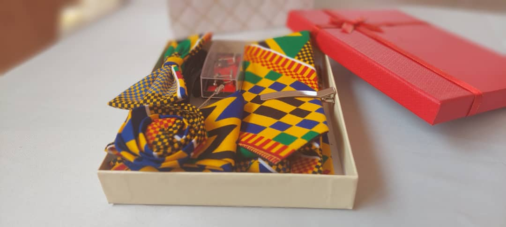
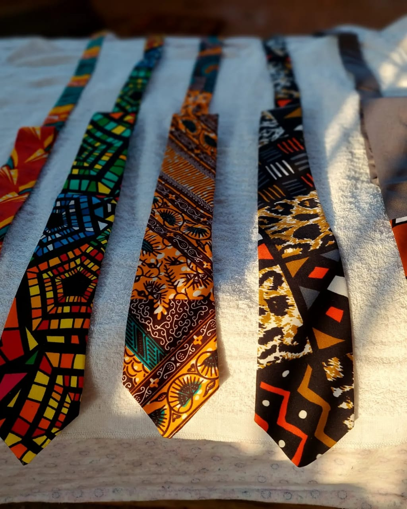

<h3>African Fabric tie and Accessories</h3>
Dedaa Impressions uses African fabrics to make amazing hand-made quality ties, bow ties, lapel pins and cufflinks
<hr />

 <br > <br />
 <br > <br />
 <br > <br />
 <br > <br />


 <br > <br />


<h4>Click the links down below to follow or contact Dedaa Impressions</h4>
<p><a href="./public/about.html"></a></p> <hr/>
<p><a href="./public/contact_Di.html"></a> </p> <hr/>
<p><a href="./public/follow.html"></a></p>

